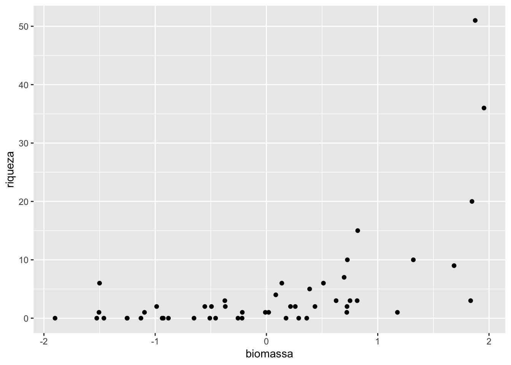
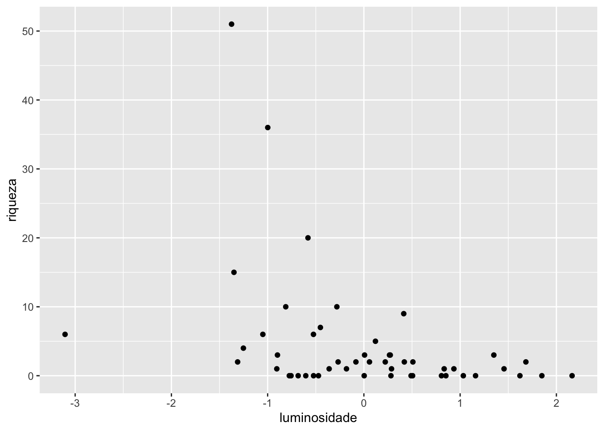
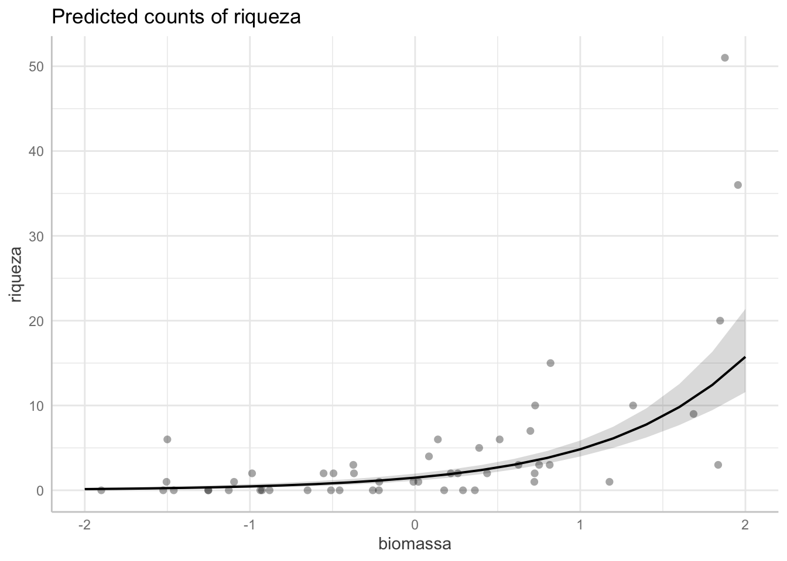
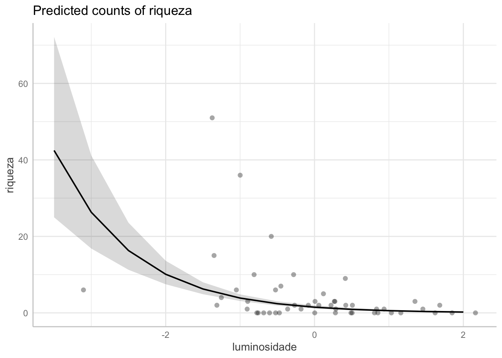
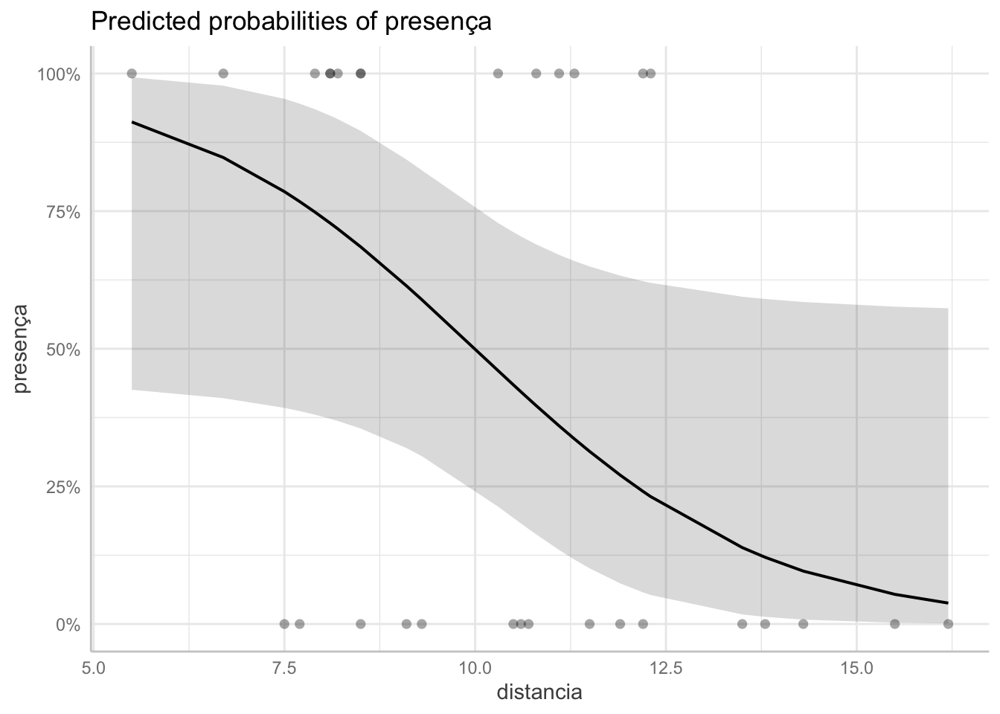
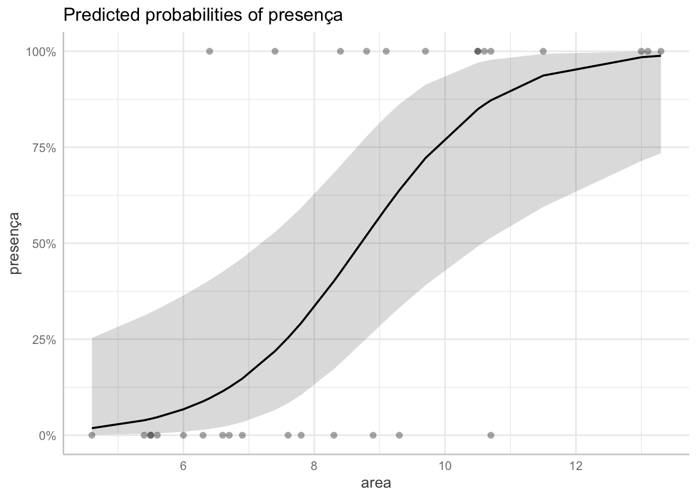

Modelos lineares generalizados nos permitem analisar dados em casos em que a variância não é constante e/ou os erros não apresentam distribuição normal. Esses modelos são bem úteis para casos onde temos dados de contagem ou proporções, e também quando temos como variável resposta uma variável binária, além de outros casos (Jones et al., 2022).
Três aspectos importantes dos GLMs são:
A estrutura de erro.
O preditor linear.
A função de ligação.
Até agora tínhamos tratados os dados assumindo que o erro apresentava distribuição normal. Em casos onde esse princípio era violado, costumava-se usar a transformação da variável resposta ou adoção de métodos não paramétricos. Os GLMs permitem o tratamento de erros em diferentes tipos de distribuição.
A estrutura do modelo generalizado relaciona cada valor de da variável resposta \(y\) observado a um valor transformado conhecido como preditor linear (\(\eta\)). A função que relaciona os valores de \(y\) com seu preditor linear é chamada de função de ligação.
As funções canônicas de ligação são as opções padrão empregadas no R para quando uma estrutura particular de erros é empregada com o argumento family na fórmula do modelo linear generalizado
Distribuição dos erros
Função canônica de Ligação
Função inversa
Normal
identidade
identidade \(\mu = \eta\)
Poisson
log
exponencial \(\mu = e^\eta\)
Binomial
logit
logística \(\frac{\mu = e^\eta}{1+e^\eta}\)
10.1 Desvio (deviance)
A medida da discrepância entre os valores ajustados pelo modelo e os valores observados nos GLM é chamada de desvio ou deviance. Esta medida é baseada na comparação da verossimilhança entre o modelo criado e um modelo saturado, onde é criado um modelo que ajusta os dados perfeitamente.
10.2 GLMs para dados de contagem
Vamos analisar o conjunto de dados riqueza, que inclui a riqueza de espécies em parcelas, relacionadas ao índice de luminosidade e biomassa de serrapilheira. Primeiro vamos limportar os dados, verificar sua estrutura e observar as primeiras linhas:
Vamos criar um gráfico para avaliar a relação entre a variável resposta e as variáveis preditoras (Figura 10.1).
library(ggplot2)ggplot(riq)+geom_point(aes(x = biomassa, y = riqueza))ggplot(riq)+geom_point(aes(x = luminosidade, y = riqueza))

(a) preditor: biomassa de serrapilheira

(b) preditor: luminosidade (abertura do dossel)
Figura 10.1: gráfico de dispersão relacionando a riqueza de espécies com biomassa e luminosidade.
Nos gráficos conseguimos ver que há uma relação positiva entre o número de espécies com o aumento da biomassa, entretanto parece que há uma relacão negativa entre a riqueza e a luminosidade.
Como temos um dado de contagem, vamos criar um modelo linear generalizado:
modelo1 <-glm(riqueza ~ biomassa * luminosidade, data = riq, family = poisson)summary(modelo1)
Call:
glm(formula = riqueza ~ biomassa * luminosidade, family = poisson,
data = riq)
Coefficients:
Estimate Std. Error z value Pr(>|z|)
(Intercept) 0.39721 0.14218 2.794 0.00521 **
biomassa 1.17932 0.11253 10.480 < 2e-16 ***
luminosidade -0.95762 0.09501 -10.079 < 2e-16 ***
biomassa:luminosidade 0.01153 0.07332 0.157 0.87503
---
Signif. codes: 0 '***' 0.001 '**' 0.01 '*' 0.05 '.' 0.1 ' ' 1
(Dispersion parameter for poisson family taken to be 1)
Null deviance: 499.017 on 49 degrees of freedom
Residual deviance: 44.719 on 46 degrees of freedom
AIC: 157.08
Number of Fisher Scoring iterations: 5
O modelo indica que há relação positiva entre a riqueza e a biomassa da serrapilheira, entretanto temos uma relação negativa entre a luminosidade que atinge o sub-bosque devido à abertura do dossel e a riqueza de espécies. A interação antre as duas variáveis preditoras não foi significativa. Algumas particularidades sobre o resumo dos modelos lineares generalizados:
Em vez de apresentar estatísticas sobre os resíduos, são apresentadas estatísticas descritivas do desvio (deviance).
É preciso atenção com os coeficientes dos modelos, pois eles estão apresentados na escala do preditor linear. No caso dos modelos da família Poisson, a função de ligação canônica é a logarítmica. Para se colocar os coeficientes na escala da variável resposta, deve-se utilizar a função inversa, que no caso é a exponencial.
10.2.1 Superdispersão (overdispersion)
Outra coisa importante que deve ser levada em conta é que modelos como os da família Poisson e binomial assumem que o parâmetro de dispersão é igual a 1, o que pode não ser adequado. Caso este parâmetro não seja adequado, observaremos que o desvio residual (residual deviance) dividido pelos seus graus de liberdade será muito diferente de 1. No nosso exemplo, o desvio residual foi 44,7 para 46 graus de liberdade e, sendo assim, foi adequado. Caso haja discrepância entre o desvio residual e os graus de liberdade, pode ser interessante utilizar modelos de famílias que podem variar o parâmetro de dispersão. nesse caso pode ser utilizada a família quasi-poisson (com o argumento family = quasipoisson) ou binomial negativa (utilizando a função glm.nb() do pacote MASS). Para modelos da família binomial (apresentada a seguir), pode ser utilizada a família quasi-binomial (com o argumento family = quasibinomial). Mais detalhes sobre o assunto podem ser vistos em Jones et al. (2022).
10.2.2 Simplificando o modelo
Podemos criar um modelo mais simples sem interação e observar se esse modelo é melhor que o testado anteriormente. Para isso, podemos utilizar a função ANOVA para comparar os modelos como feito anteriormente. No caso de modelos lineares generalizados, a comparação deve ser feita por qui-quadrado, assim devemos incluir o argumento test="Chi".
Analysis of Deviance Table
Model 1: riqueza ~ biomassa * luminosidade
Model 2: riqueza ~ biomassa + luminosidade
Resid. Df Resid. Dev Df Deviance Pr(>Chi)
1 46 44.719
2 47 44.744 -1 -0.024573 0.8754
Podemos observar que o modelo 1 não apresenta vantagem em relação ao modelo 2. Assim optamos por manter o modelo mais simples, que não inclui interação.
Vamos criar um gráfico com a curva da predição da riqueza pela biomassa e luminosidade.Para isso, utilizaremos o pacote ggeffects (Figura 10.2).
Data points may overlap. Use the `jitter` argument to add some amount of
random variation to the location of data points and avoid overplotting.

(a) preditor: biomassa de serrapilheira

(b) preditor: luminosidade (abertura do dossel)
Figura 10.2: gráficos de dispersão relacionando a riqueza de espécies, biomassa e luminosidade, incluindo ajuste do modelo linear generalizado.
10.3 Dados binários
Podemos utilizar modelos lineares generalizados para analisar dados onde a variável resposta é binária.
No exemplo abaixo utilizaremos os dados da planilha pres_aus, que apresenta dados de presença/ausência de uma determinada espécie em fragmentos florestais, como uma função da área do fragmento e de sua distância de uma reserva florestal maior. No conjunto de dados, a variável presença está codificada como 0 e 1, onde 0 indica ausência e 1 indica presença da espécie:
Vamos criar dois modelos: um deles avaliando a interação entre as variáveis explanatórias e o outro não avaliando a interação.
praus.modelo1 <-glm(presença ~ area * distancia, data = praus, family = binomial) #com interaçãopraus.modelo2 <-glm(presença ~ area + distancia, data = praus, family = binomial) #sem interação
Vamos comparar os modelos:
anova(praus.modelo1, praus.modelo2)
Analysis of Deviance Table
Model 1: presença ~ area * distancia
Model 2: presença ~ area + distancia
Resid. Df Resid. Dev Df Deviance Pr(>Chi)
1 26 19.674
2 27 19.688 -1 -0.014146 0.9053
O modelo mais complexo (incluindo a interação) não é significativamente melhor, desta forma utilizamos o modelo mais simples pelo critério da parcimônia.
summary(praus.modelo2)
Call:
glm(formula = presença ~ area + distancia, family = binomial,
data = praus)
Coefficients:
Estimate Std. Error z value Pr(>|z|)
(Intercept) -3.0103 3.2778 -0.918 0.3584
area 0.9672 0.3446 2.807 0.0050 **
distancia -0.5204 0.2729 -1.907 0.0565 .
---
Signif. codes: 0 '***' 0.001 '**' 0.01 '*' 0.05 '.' 0.1 ' ' 1
(Dispersion parameter for binomial family taken to be 1)
Null deviance: 41.455 on 29 degrees of freedom
Residual deviance: 19.688 on 27 degrees of freedom
AIC: 25.688
Number of Fisher Scoring iterations: 6
Ao analisar as estimativas (Estimate) vemos uma relação positiva entre a presença de aves com area, e coeficiente de distância foi negativo. Assim fragmentos maiores tem mais chance de apresentar a espécie, enquanto fragmentos mais afastadas da reserva florestal têm uma probabilidade menor de apresentar a espécie. pelo teste-z, a distância foi marginalmente significativa, entretanto para avaliar de forma mais adequada, devemos realizar uma análise do desvio com a função anova():
Nesta análise, a partir de um modelo nulo (presença ~ 1), as variáveis preditoras são adicionadas sequencialmente. Desta forma, vemos que tanto a adição da variável area como distância melhoram significativamente o modelo, desta forma devem ser mantidas. É preciso ter atencção em relação à interpretação dos valores do deviance, pois, como eles são adicionadoss equencialemnte, dependendo da ordem que forem adicionados, os valores serão diferentes.
Podemos realizar a predição dos valores e preparar gráficos representando o modelo utilizando opacote ggeffects (Figura 10.3):
#Gráfico para isolamentopraus.pred.dist <-ggpredict(praus.modelo2, terms =c("distancia [all]"))plot(praus.pred.dist, rawdata =TRUE)
Data points may overlap. Use the `jitter` argument to add some amount of
random variation to the location of data points and avoid overplotting.
#Gráfico para incidênciapraus.pred.ar <-ggpredict(praus.modelo2, terms =c("area [all]"))plot(praus.pred.ar, rawdata =TRUE)
Data points may overlap. Use the `jitter` argument to add some amount of
random variation to the location of data points and avoid overplotting.

(a) preditor: distância

(b) preditor: área
Figura 10.3: gráfico relacionando a probabilidade de se encontrar determinada espécie com as variáveis contínuas preditoras
Jones, E., Harden, S., & Crawley, M. J. (2022). The R book (Third edition). Wiley.